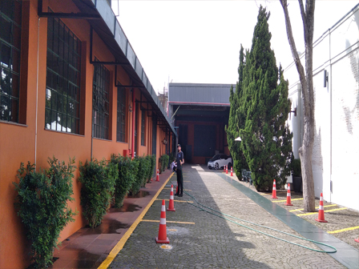
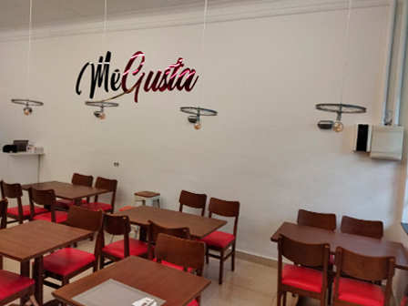
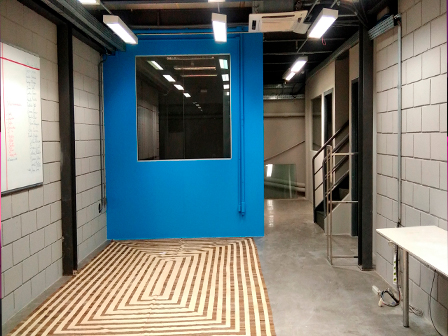
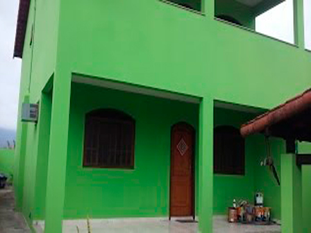

Pinturas em Geral
São Paulo, BrazilVizite nossas redes sociais


Portfólio
-

Galpóes
Pintamos desde a area comum a area interna, executamos trabalhos em altura. para melhor comididade dos clientes executamos nossos trabalhos nos sabados, domingos e feirados, para que possamos desenvolver nossos trabalhos da melhor forma possivel sem expor as pessoas sob poeiras e cheiros de tinta. fotografamos os locais antes de iniciar os trabalhos afin de compararmos apos concluido.
-

Comercios
Pintamos pequenos comercios, tais como bares e restaurantes, saloes de cabeleireiros entre outros. Antes de inalguração, limpamos e organizamos todo o local antes de dar como finalizado nossos trabalhos. Em caso de comercio em atividades trabalhamos em periodo noturno em area interna, nao executamos trabalhos noturnos em areas externas.
-

Salas comerciais
Salas comerciais e escritorios. Trabalhamos após expediente feriados e finais de semana. fotografamos todo o local a ser pintado antes de iniciar os trabalhos após concluido executamos uma vistotia junto ao cliente para certificar que esteja da forma combinada. em casos de pequenos reparos tratamos juntos os periodos que melhor se adequa a ambos para que seja feito os trabalhos.
-

Imoveis
Pintamos casas, apartamentos e sobrados. Casas e Sobrados, executamos pinturas internas e externas, nos finais de semana e feriados em apartamentos, executamos pinturas internas em dias e horarios de acordo com as normas do condominio. pedimos a gentileza de verificar as normas junto ao sindico afins de evitar transtornos posteriores.
Todos os direitos reservados | Nei o Bom © 2021